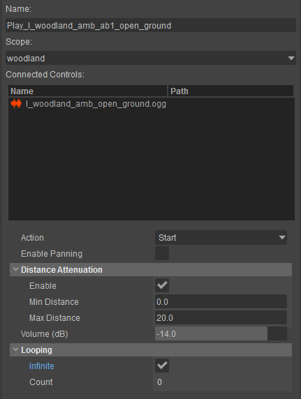
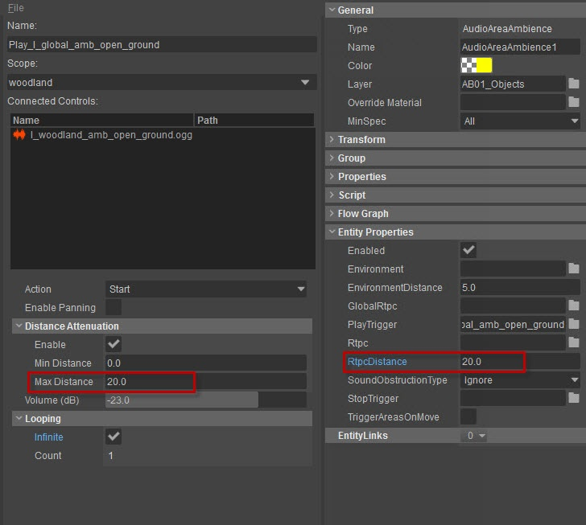

Обзор
В этом уроке объясняется, как настроить окружающие звуки с помощью SDL-Mixer и CRYENGINE.
В этой теме
Настройка атмосферы в SDL-Mixer
Для реализации звуков окружения с помощью SDL-Mixer в CRYENGINE Звуковая зона используется сущность.
Чтобы настроить событие SDL-Mixer для воспроизведения Ambience:
- Включить панорамирование флажок должен быть отключен (необходим, поскольку SDL-Mixer не поддерживает распространение звука).
- Включить ослабление расстояния флажок должен быть включен и приглушит громкость звука (в зависимости от используемых значений расстояния).

Важно
Значение Max Distance в свойствах SDL-Mixer должно быть равно или меньше значения RtpcDistance собственность Аудиозона Атмосфера eность, если нет то звук начинает играть а не затухает постепенно.

Чтобы узнать, как настроить триггер аудиосистемы внутри CRYENGINE, обратитесь к руководству. Аудио и атмосфера.
Обратите внимание, что существуют определенные различия в подходе к реализации атмосферы на уровне. Это связано с ограничениями функций SDL-Mixer.
Вам не нужно указывать RTPC или среду в свойствах объекта, поскольку SDL-Mixer не поддерживает эти расширенные функции. Если вам нужен больший контроль над аудиоконтентом вашего проекта и вы хотите использовать расширенные функции, рекомендуется использовать профессиональное промежуточное программное обеспечение для аудио, такое как Wwise или FMOD Студия реализации в CRYENGINE.
Вам не нужно указывать RTPC или среду в свойствах объекта, поскольку SDL-Mixer не поддерживает эти расширенные функции. Если вам нужен больший контроль над аудиоконтентом вашего проекта и вы хотите использовать расширенные функции, рекомендуется использовать профессиональное промежуточное программное обеспечение для аудио, такое как Wwise или FMOD Студия реализации в CRYENGINE.
Узнайте больше о консольных командах микшера SDL в CRYENGINE в SDL Консольные команды микшера.